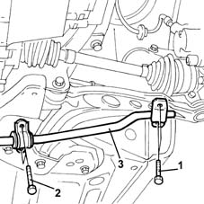
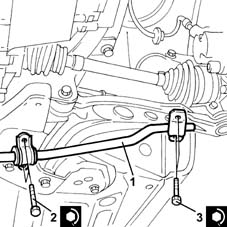

4410C10 front suspension stabilizer bar - r+r - check wheel geometry separately
- Path
- Procedures > 44 SUSPENSION AND WHEELS > 4410 FRONT SUSPENSION > 4410C stabilizer bar and anchorage struts > 4410C10 front suspension stabilizer bar - r+r - check wheel geometry separately
- Kind
- repair procedure (removal / refitting; the operation number is the code)
- Applies to
- all engines; all production periods
- Interactive page
- https://sloeber94.github.io/elrnDB-lYpsln/en/#/2429236
Applies to: all engines; all production periods
 Removing
Removing
 Refitting
RefittingPosition the vehicle on the ramp.
Proceed with removal 4450B12 front or rear wheels (two) - r+r .
1. Undo the bolts fixing the anti-roll bar to the lower track control arm.
2. Undo the bolts fixing the anti-roll bar to the front suspension crossmember.
3. Remove the front suspension anti-roll bar.

Applies to: all engines; all production periods
Refitting
Removing.
1. Replace the front suspension anti-roll bar in its housing.
2. Tighten the bolts fixing the anti-roll bar to the front suspension crossmember to the recommended torque.
 | Fastening | Component | Ø | Value (daNm) |
|---|---|---|---|---|
2 | Bolt | FRONT ANTI-ROLL BAR | M8 | (Front suspension crossmember side) 3.2 ÷ 3.9 |
3. Tighten the bolts fixing the anti-roll bar to the lower track control arm to the recommended torque.
| Fastening | Component | Ø | Value (daNm) |
|---|---|---|---|---|
3 | Bolt | FRONT ANTI-ROLL BAR | M8 | (Lower track control arm side) 3.2 ÷ 3.9 |

Applies to: all engines; all production periods
Proceed with refitting 4450B12 front or rear wheels (two) - r+r .
Remove the car from the ramps.